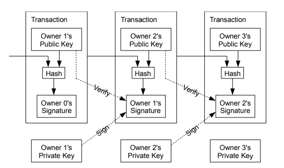

Bitcoin
Introduction
- We want a system of financial payments without having to rely on a financial institution to process payments
- We want a system that is non-reversible since that requires mediation which has costs, which in turn lead to increased transaction costs
- Merchants need to be wary of customers since they are not sure if they will be scammed by reversed payments
- We want to use irreversible transactions to protect sellers and routine escrow mechanisms to protect buyers
- Escrow mechanism is something that prevents money from being sent until the goods have been received
- The system is secure as long as honest nodes collectively control more CPU power than any cooperating group of attacker nodes
Transactions
- We define our coin as a chain of digital signatures
- Each owner transfers the coin to the next by digitally signing a hash of the previous transaction and the public key of the next owner
- To verify this chain, a payee can just check each signature

- We need to verify that one of the owners did not double-spend their coin
- One common solution is for a central authority to take all coins spent and then create new coins that are given to the recipients
- But then this adds a central authority
- We therefore need a way for a payee to know that previous owners for a coin did not sign off this coin earlier
- Therefore, we need each payee to be aware of all transactions and they can just check the whole chain
- The first transfer is the one that matters (all after are consider void)
- We therefore need a system for participants to agree on a single history of the order in which transactions are received
- The solution proposed is to use a sense of timestamps where each block includes in it the hash of the previous block
- This idea is known as a timestamp server
Proof of Work
- To implement a distributed timestamp server, we need a proof-of-work system
- In each block, we have a "nonce" value for the sole purpose that if we change this nonce value, it will change the resulting hash of the block
- We scan for a nonce value that when hashed, the hash begins with a certain amount of zero bits
- Once the CPU effort has been expended to make this block and attach it to the chain, the block cannot be changed without redoing the work
- Therefore to change the transaction history, we have to redo a lot of blocks
- We take the longest chain as the source of truth
- If an attacker wanted to change a past transaction, they would have to catch up to the honest nodes
Network
- New transactions are broadcast to all nodes
- Each node collects new transactions into a block
- Each node works on finding the proof-of-work for its block
- When a node finds a proof-of-work, it broadcasts the block to all nodes
- Nodes accept the block only if all transactions in it are valid and not spent
- Nodes express their acceptance of the block by working on creating the next block in the chain
- It is possible that branches will diverge, but one node becomes longer, nodes will start to use that one instead
Incentive
- By convention, the first transaction in a block is a special transaction that creates anew coin owned by the creator of the block
- This incentivizes nodes to support the network and adds coins into circulation
- This does add a bit of inflation, but we can also provide incentive with transaction fees
- We can make the output value of a transaction less than the input value and give the extra to the block creator
- The incentive may help encourage nodes to stay honest because if a greedy attacker is able to assemble a large amount of CPU power, they would have to choose between using it honestly and gaining incentive or trying to attack the entire chain and modify transactions
- It is more profitable to just join the honest nodes
Random
- We can use a Merkle tree to compress processed transactions to compress the chain
- When a transaction involves multiple coins, we can use transactions with multiple inputs and outputs
- This does have an issue of privacy since all payment histories are made public
- We solve this by keeping public keys anonymous and using a different public key pair for each owner